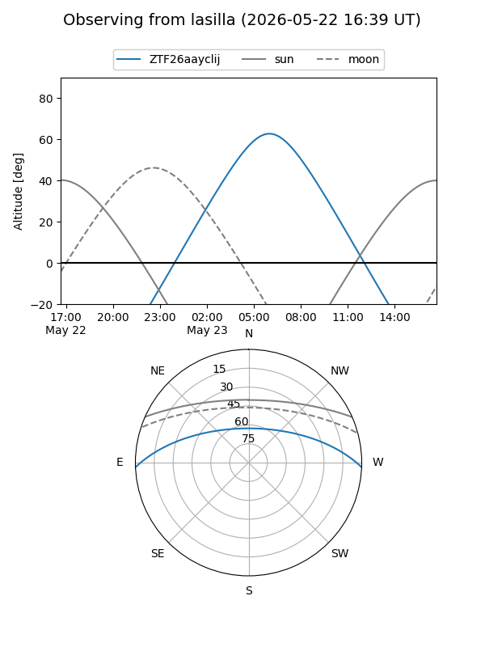
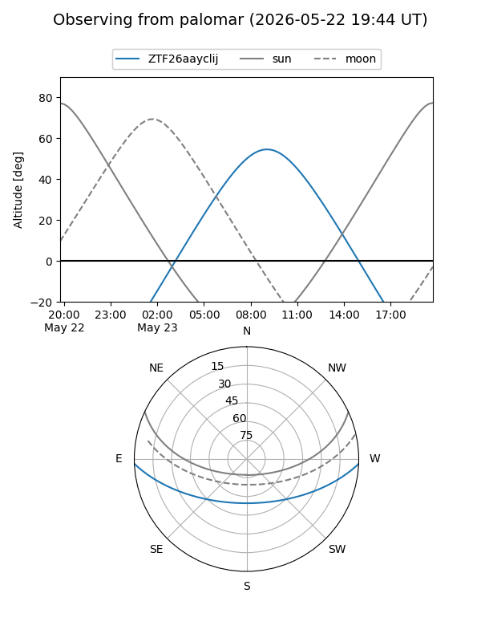

ZTF26aayclij
Target ZTF26aayclij at 2026-05-23 08:47
Aliases and brokers:
lsst-FINK: link
lsst-Lasair: link
lsst-ALeRCE: link
ztf-FINK: link
ztf-Lasair: link
ztf-ALeRCE: link
alt names
ZTF26aayclij (ztf,fink_ztf)
Coordinates:
equatorial (ra, dec) = 259.6101,-2.01116
equatorial (HMS+DMS) = 17:18:26.41,-02:00:40.18
galactic (l, b) = (19.9838,+19.57803)
Flags:
Photometry:
last ztfg=19.30
1 ztfg detections
Lightcurve
Visibility


Additional plots